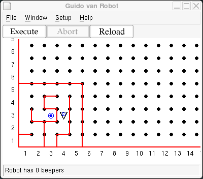

Congratulations! If you are here, you are probably ahead of most of your classmates, and have done an excellent job programming Guido. Your classmates need a little more time to catch up, and you are ready for an extra challenge.
As you begin this project, you may want to go back and re-read the Overview from Step 15, about planning your work on paper before coding it. I'll help you out with the algorithm, but I suggest that you pseudocode it and walk through it in your head before writing your program.
Guido has lost his lunchbox. He was playing in a maze and set it down and then wandered around. Now he is hungry. Luckily he left a beeper in his lunchbox. His situation looks like this:

Write a program to help Guido find his lunchbox. The secret is to have Guido
follow along the right edge of the maze, turning right if he can, or straight
ahead if he can't, or turning left as a last resort. Write a program using
an if..elif..else statement so Guido can eat his lunch.
By the way, if you think you've solved this problem before, you are right ;-)
Copyright © 2003 Roger Frank.